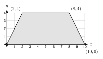

8.4 Volume of Prisms and Cylinders
- Find the volume of a prism with V = Bh
- Find the volume of a cylinder with V = πr2h
- Find the volume of a slanted (oblique) prism or cylinder
- Change cubic units and solve real volume problems
Warm-Up
1.
2.
3.
8.4.1Volume of a Prism
- Volume is the amount of inside a solid. We count .
- Each layer of the box below has 4 · 3 = cubes. There are layers. Total: cubes.
- For any prism, V = . B is the area of the .


B = 6 · 4 =
V = Bh =
B = 12(6)(4) =
Height of the prism =
V =

Bottom = 10 − 0 = Top = 8 − 2 = Height =
B = 12(10 + 6)(4) =
V = Bh =
8.4.2Volume of a Cylinder
V = π(3)2(10) =
≈
8.4.3Slanted Solids
- Cavalieri's principle: two solids with the same and the same cross-section at every level have the same .
- A leaning solid is . Use the , not the slanted side.


The 13 ft side .
V = π(4)2(12) =
≈
8.4.4Changing Units
- 1 yd3 = ft3 because 3 · 3 · 3 = 27.
- 1 ft3 = in3 because 12 · 12 · 12.
- 1 ft3 ≈ gallons.
- Make all lengths the before you multiply. 4 in = ft.
V = 12 · 20 · 13 =
80 ÷ 27 ≈
r = V = π(12)2(4) = ≈
1809.6 · 7.48 ≈ ≈
8.4.5Finding a Missing Dimension
5000 ÷ 7.48 ≈
π(4)2h = 668.4, so h =
x = (a length cannot be ). The box is .
1. V = Bh. B is the area of the .
2. A cylinder has V = πr2h. Volume is in units.
3. For an solid, use the height.
4. One cubic yard is cubic feet.
Practice
Volume of Prisms
1. A box is 9 cm by 5 cm by 4 cm. Find the volume.
2. A cube has edge 6.5 m. Find the volume to the nearest tenth.
3. The base of a prism is a right triangle with legs 7 in and 24 in. The prism is 10 in long. Find the volume.
4. The base of a prism is a trapezoid with parallel sides 6 ft and 10 ft. The trapezoid is 5 ft tall. The prism is 12 ft long. Find the volume.
5. The base of a prism is the triangle with vertices (0, 0), (6, 0), (2, 5). Each unit is 1 ft. The prism is 10 ft tall. Find the volume.
6. The base of a prism is a regular hexagon with side 4 cm. The prism is 10 cm tall. Give the exact volume and a decimal rounded to the nearest tenth.
7. A box has a base 9 ft by 5 ft and a volume of 180 cubic feet. Find its height.
8. A box has length x + 1, width x, and height 6. The volume is 336 cubic units. Find x.
Volume of Cylinders
9. r = 6 ft and h = 5 ft.
10. The diameter is 14 cm and the height is 20 cm.
11. A cylinder with radius 5 in has volume 250 π cubic inches. Find its height.
12. A cylinder with height 6 m has volume 96 π cubic meters. Find its radius.
13. Find the mistake. Esperanza finds the volume of a cylinder with diameter 10 cm and height 4 cm. She writes V = π(10)2(4) = 400 π. What is the correct volume?

14. Six cans fit in a box, as in the top view. Each can has diameter 4 in and height 6 in. The box is 12 in by 8 in by 6 in. What percent of the box do the cans fill? Round to the nearest tenth of a percent.
Slanted Solids
15. An oblique cylinder has radius 3 in, a slanted side of 10 in, and a straight-up height of 8 in. Find the volume. Give the exact answer and a decimal rounded to the nearest tenth.
16. An oblique prism has a rectangular base 6 m by 5 m. The slanted edge is 12 m. The straight-up height is 9 m. Find the volume.
Real Problems
17. A slab is 15 ft by 10 ft and 6 in thick. How many cubic yards of concrete? Round to the nearest tenth.
18. A driveway is 24 ft by 10 ft and 5 in thick. How many cubic yards of concrete? Round to the nearest tenth.
19. A raised garden bed is 8 ft by 4 ft and filled 1.5 ft deep with soil. A bag of soil holds 2 cubic feet. How many bags are needed?
20. An aquarium is 48 in long, 18 in wide, and 24 in tall. How many gallons does it hold when it is full? Use 1 ft3 ≈ 7.48 gallons. Round to the nearest gallon.
21. A round pool has diameter 15 ft and water 3.5 ft deep. How many gallons does it hold? Use 1 ft3 ≈ 7.48 gallons. Round to the nearest hundred.

22. This is the side view of a pool. The pool is 15 ft wide. Find the area of the side view, then the volume, then the gallons. Round the gallons to the nearest hundred.
23. A cylinder tank has radius 5 ft and holds 4000 gallons. How tall is it? Round to the nearest tenth.
Test Practice
A. 2,100 gallons
B. 8,500 gallons
C. 33,800 gallons
D. 34,000 gallons
A. 3.3
B. 6.7
C. 40.0
D. 90.0